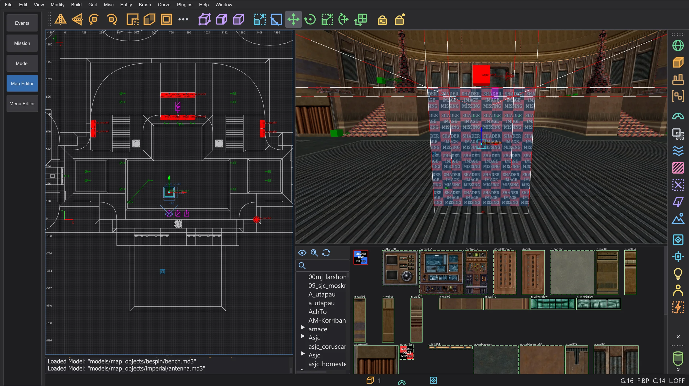
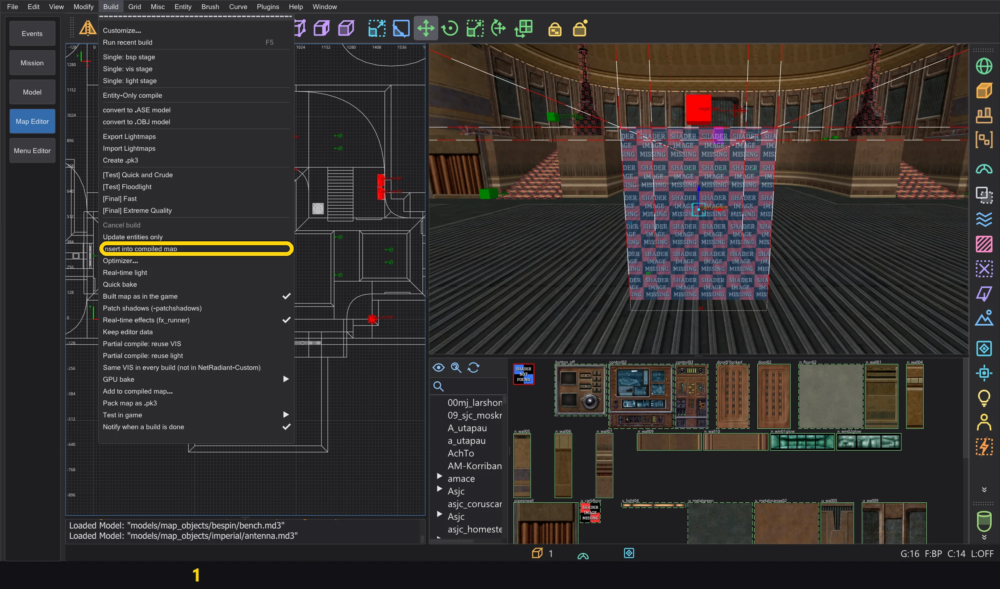
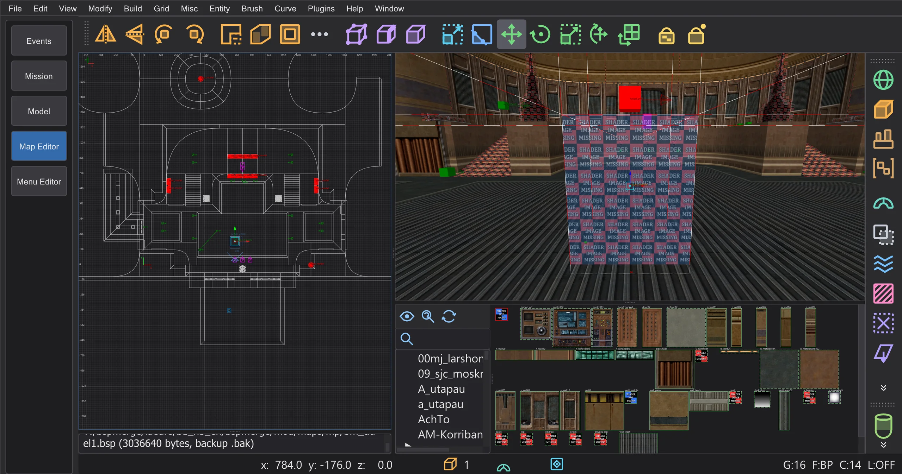
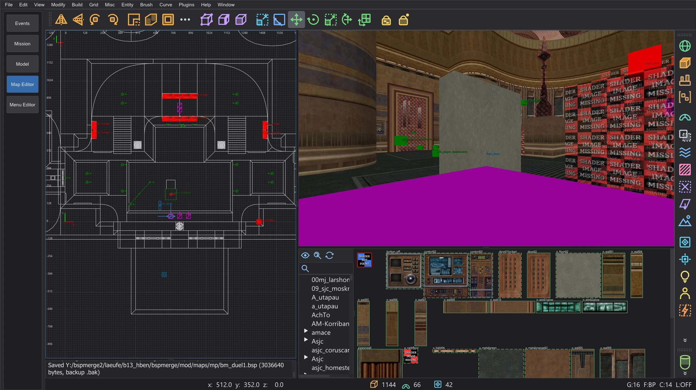
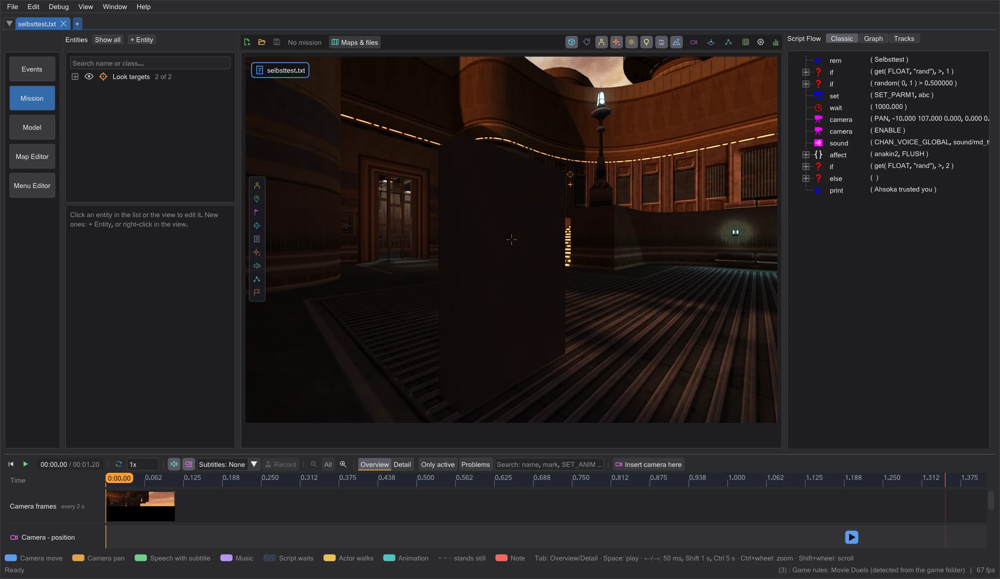

Map editor: inserting brush entities into compiled maps
Add triggers, a func_usable, clip brushes and visible movers such as func_door to a compiled map without its source: Build > Insert into compiled map builds only the new parts and appends them to the .bsp - entities as new models *N, visible ones with lightmaps that fit the map, clips into the world. BSP tree, VIS and lightmaps of the world stay byte for byte.
How it works#
- 1
Open the compiled map with File > Open .bsp (see Map editor: opening and changing finished maps).
- 2
Build the new brush entities as usual: a brush with
textures/system/triggerastrigger_multipleortrigger_once, afunc_usablefromnodrawbrushes, brush entities with anoriginbrush. New point entities - for example thetarget_printortarget_relaythat a new trigger targets - come along.
A new trigger_multiplein front of a player start of mp/duel1 and itstarget_print. - 3
Build > Insert into compiled map: only the new entities go into an empty map (a worldspawn without brushes,
<name>_teil.mapin the work folder), and q3map2-bspbuilds them. Leaks do not matter and no light is needed: q3map2 builds the models of entities without a flood fill.
The menu Build with the entry (1). - 4
Their models are appended to the .bsp as new
*N: models, brushes, brush sides, planes and shaders (an existing shader with the same flags is used again), and for each model a leaf of its own, as q3map2 builds it. The entities get"model" "*N"in the entity lump. BSP tree, VIS, lightmaps, surfaces and light grid of the world stay byte for byte; the other lumps only grow at the end. - 5
Saving works as in the window Shaders and surfaces: a loose .bsp is written with a backup
.bakfirst, from a .pk3 you choose the way. Then the new entities belong to the map; inserting again only takes what is new since then.
After inserting: the console reports the saved .bsp and its backup .bak.


Checks#
- Not inserted: new world brushes that are not clips (solid, water, fog or visible ones would change BSP tree and VIS), changed or removed world brushes and existing brush entities (they need a full build), a different BSP format, a compiled map with external lightmaps (
lm_####.tga). - Limits of the renderer: at most 256 lightmap pages (
MAX_LIGHTMAPS) and the draw surface, vertex and index limits ofqfiles.h; over them the command refuses and reports the numbers. - Number of models as the game loads them: at most 511 in single player (the next number is the game's own box model,
BOX_MODEL_HANDLE) and 510 in multiplayer (CAPSULE_MODEL_HANDLE); from 513 on the game refuses the map (MAX_SUBMODELS). - Warnings: a solid new brush that overlaps solid world brushes, a
targetthat matches notargetnameof the map, the format limits ofqfiles.h. - Changed existing point entities stay as they are in the compiled map; write them with Build > Update entities only.
- Unsaved changes in the window Shaders and surfaces are asked about first: Save saves them, and the entities are inserted into the saved map; Discard drops them; Cancel inserts nothing. The same question comes before another map is opened.
- If saving fails (for example because the game has the file open) or you cancel the choice of the save path, nothing changes: the file, the working copy and the new entities stay as before, and you can insert again.
Clips and visible movers#
- 1
Clips: a new brush in the worldspawn with
textures/system/clip(or another shader withplayerclip,monsterclip,botclip,shotclip) goes into the world. It is entered into every leaf of the BSP tree it reaches into, as q3map2 does it for a full build - that is how the game finds world brushes. Only the leaf brush lists and the brushes grow; BSP tree, VIS, surfaces, lightmaps and light grid stay byte for byte.
A clip brush behind the trigger and a new func_doorin front of the player start of mp/duel1. - 2
Visible movers (
func_door,func_train,func_rotating,func_static,func_platwith visible brushes) need light. After the first build the command builds the part a second time, now with the converted world as shadow caster, its baked models and the lights of the map (<name>_teillicht.map), and lights it: q3map2-bspand-lightwith the switches stored in the map (_q3map2_cmdline), otherwise with the q3map2 defaults. - 3
Only the new models are taken over: their surfaces, vertexes, indexes and shaders, and only the lightmap pages they use, appended behind the lightmaps of the map. The brush sides point to their new surfaces, fogs are matched with the fogs of the map. The lightmaps of the world stay byte for byte.

The saved map in the preview of the mission tab: the new door with its lightmap, seen from the eye of the player at the start.